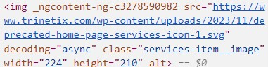

Example 6
Enterprise Operations Icon
Copied HTML
In its original form, this icon is an SVG within a larger container that links to a separate page. Multiple icons of this style appear in this section.
In its original form, this icon is an SVG within a larger container that links to a separate page. Multiple icons of this style appear in this section.